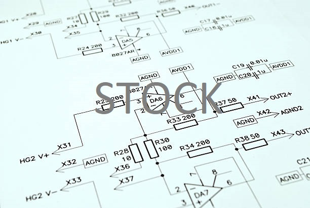

Firmware
Projects that involved me writing code for hardware

Street Traffic Simulator
Simualtes street traffic by using LEDs and shift-registers. The flow of traffic is adjusted by using a potentiometer, at which case the traffic light spends more time green than red.
Core Concepts: C programming | Real-time Operating Systems
Project Progress: 100% - Completed (Dec 2019)
Final Product: The electronics were placed on two breadboards and were controlled using a STM board; The system worked brillantly. 4 RTOS tasks were used: one to read the potentiometer, one to generate traffic, one to adjust traffic lights, and one to output the LED states.